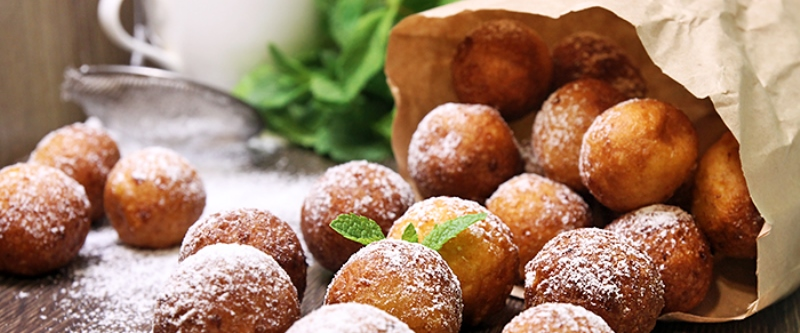

приготовление:
-
2 пачки творога по 250 г по возможности протереть через сито. Смешать с 8 ст. л. сахара, ½ ч. л. соды, 2 яйцами и щепоткой соли. Постепенно добавлять муку и замесить тесто, которое не липнет к рукам.
-
Разогреть в гусятнице или казане столько подсолнечного масла, чтобы шарики могли полностью в него погрузиться. Скатать из теста шарики, обвалять их в манке и жарить порциями до золотистого цвета. Оставлять между шариками достаточно места, чтобы они могли переворачиваться.
-
Выложить готовые пончики на бумажное полотенце, чтобы впиталось лишнее масло.